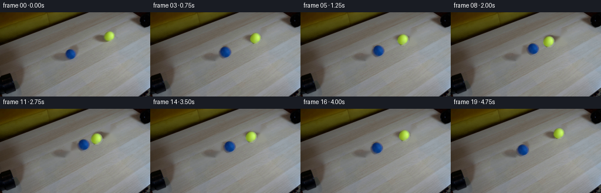
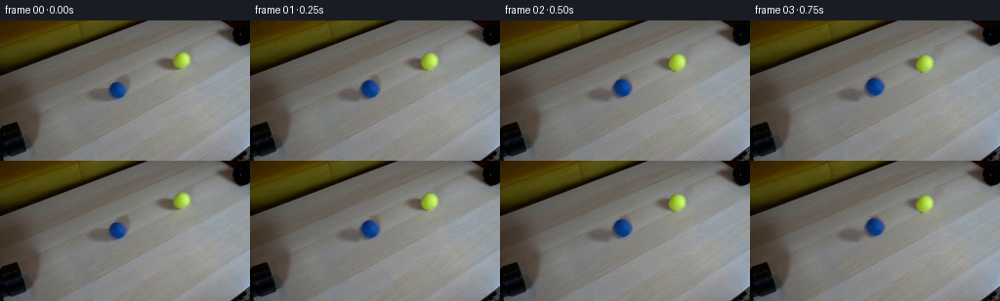

CODING AGENTS AS PIXEL WORLD MODELS
traex/GPT-5.6-Sol · 0031
点击播放 · 原生 RGB 像素
逐轮保存的候选
回放视频、检查图与代码变化。
每份候选均可单独播放。实际图片检查记录在下方工具轨迹中。
候选 01播放与检查图
点击播放 · 原生 RGB 像素


展开代码变化
--- 上一保存版本
+++ 本次保存版本
@@ -0,0 +1,198 @@
+"""Generate the requested locked-off two-ball collision sequence.
+
+The supplied frame is used as both the exact opening frame and as the source
+for the ball appearance. Later frames use a locally inpainted copy of the
+same photograph, so all of the tabletop and pipe geometry remains fixed.
+"""
+
+from pathlib import Path
+
+import cv2
+import numpy as np
+from PIL import Image
+
+import artifact_io
+
+
+CASE_DIR = Path(__file__).resolve().parent
+
+
+def soft_disc(shape, center, inner, outer):
+ """Cosine-feathered circular matte."""
+ h, w = shape
+ yy, xx = np.mgrid[:h, :w]
+ radius = np.hypot(xx - center[0], yy - center[1])
+ a = np.ones((h, w), np.float32)
+ a[radius >= outer] = 0.0
+ transition = (radius > inner) & (radius < outer)
+ phase = (radius[transition] - inner) / (outer - inner)
+ a[transition] = 0.5 + 0.5 * np.cos(np.pi * phase)
+ return a
+
+
+def make_ball_asset(source, clean_plate, center, inner, outer, half_size=14):
+ """Recover a small foreground/matte pair from a ball in the first frame."""
+ cx, cy = center
+ x0, y0 = int(np.floor(cx)) - half_size, int(np.floor(cy)) - half_size
+ x1, y1 = x0 + 2 * half_size + 1, y0 + 2 * half_size + 1
+ src = source[y0:y1, x0:x1].astype(np.float32)
+ bg = clean_plate[y0:y1, x0:x1].astype(np.float32)
+ local_center = (cx - x0, cy - y0)
+ alpha = soft_disc(src.shape[:2], local_center, inner, outer)
+
+ # Undo the estimated original background contribution at the soft edge.
+ # Using a floor on alpha avoids unstable colours in nearly transparent
+ # edge pixels; those pixels have negligible final influence in any case.
+ divisor = np.maximum(alpha[..., None], 0.12)
+ foreground = (src - (1.0 - alpha[..., None]) * bg) / divisor
+ foreground = np.clip(foreground, 0, 255).astype(np.float32)
+ return {
+ "rgb": foreground,
+ "alpha": alpha,
+ "center": np.array(local_center, np.float32),
+ "radius": (inner + outer) * 0.5,
+ }
+
+
+def add_contact_shadow(frame, center, radius, axis):
+ """Add a restrained, diffuse tabletop/contact shadow beneath a ball."""
+ h, w = frame.shape[:2]
+ # The photograph is lit from the image's upper-right. A tiny offset toward
+ # lower-left agrees with the shading already present on both source balls.
+ sx = center[0] - 2.4
+ sy = center[1] + 2.0
+ yy, xx = np.mgrid[:h, :w].astype(np.float32)
+ # Shadow is elongated very slightly along the direction of travel.
+ ux, uy = axis
+ vx, vy = -uy, ux
+ dx, dy = xx - sx, yy - sy
+ along = dx * ux + dy * uy
+ across = dx * vx + dy * vy
+ sigma_a = radius * 0.72
+ sigma_b = radius * 0.32
+ opacity = 0.19 * np.exp(-0.5 * ((along / sigma_a) ** 2 + (across / sigma_b) ** 2))
+ # Neutral multiplication retains the local tabletop colour and grain.
+ frame *= (1.0 - opacity[..., None])
+
+
+def composite_ball(frame, asset, center, scale=1.0, squash=1.0, axis=(1.0, 0.0)):
+ """Composite an extracted ball, optionally squashed along the impact axis."""
+ rgb = asset["rgb"]
+ alpha = asset["alpha"]
+ ah, aw = alpha.shape
+ local_cx, local_cy = asset["center"]
+ radius = asset["radius"] * scale
+
+ # Construct only the small affected rectangle. Coordinates are mapped
+ # back into the source asset, preserving its original directional light.
+ extent = int(np.ceil(radius * 1.35)) + 2
+ x0 = max(0, int(np.floor(center[0] - extent)))
+ x1 = min(frame.shape[1], int(np.ceil(center[0] + extent + 1)))
+ y0 = max(0, int(np.floor(center[1] - extent)))
+ y1 = min(frame.shape[0], int(np.ceil(center[1] + extent + 1)))
+ yy, xx = np.mgrid[y0:y1, x0:x1].astype(np.float32)
+ dx, dy = xx - center[0], yy - center[1]
+
+ ux, uy = axis
+ vx, vy = -uy, ux
+ along = dx * ux + dy * uy
+ across = dx * vx + dy * vy
+ # A compensating perpendicular expansion keeps the apparent ball area
+ # nearly constant during the single contact frame.
+ along /= max(scale * squash, 1e-5)
+ across /= max(scale / np.sqrt(squash), 1e-5)
+ src_dx = along * ux + across * vx
+ src_dy = along * uy + across * vy
+ map_x = (src_dx + local_cx).astype(np.float32)
+ map_y = (src_dy + local_cy).astype(np.float32)
+
+ sampled_rgb = cv2.remap(
+ rgb, map_x, map_y, cv2.INTER_CUBIC,
+ borderMode=cv2.BORDER_CONSTANT, borderValue=(0, 0, 0)
+ )
+ sampled_alpha = cv2.remap(
+ alpha, map_x, map_y, cv2.INTER_CUBIC,
+ borderMode=cv2.BORDER_CONSTANT, borderValue=0
+ )
+ sampled_alpha = np.clip(sampled_alpha, 0.0, 1.0)[..., None]
+ region = frame[y0:y1, x0:x1]
+ region[:] = sampled_rgb * sampled_alpha + region * (1.0 - sampled_alpha)
+
+
+def generate():
+ first = np.asarray(Image.open(CASE_DIR / "first_frame.png").convert("RGB"), dtype=np.uint8)
+ assert first.shape == (144, 256, 3)
+
+ # Numerically measured centres and radii in the supplied image.
+ blue_start = np.array([119.5, 72.0], np.float32)
+ yellow_start = np.array([187.0, 41.0], np.float32)
+
+ # Make a clean photographic plate by removing only the two compact balls.
+ # The larger inpaint masks include their original contact shadows.
+ removal = np.zeros(first.shape[:2], np.uint8)
+ cv2.circle(removal, tuple(np.rint(blue_start).astype(int)), 13, 255, -1, cv2.LINE_AA)
+ cv2.circle(removal, tuple(np.rint(yellow_start).astype(int)), 12, 255, -1, cv2.LINE_AA)
+ clean = cv2.inpaint(first, removal, 3.0, cv2.INPAINT_TELEA)
+
+ blue = make_ball_asset(first, clean, blue_start, inner=8.1, outer=10.8)
+ yellow = make_ball_asset(first, clean, yellow_start, inner=7.7, outer=10.2)
+
+ separation_vec = yellow_start - blue_start
+ start_distance = float(np.linalg.norm(separation_vec))
+ axis = separation_vec / start_distance
+
+ # Account for mild perspective already visible in the source: the lower
+ # (blue) ball is about one pixel larger than the upper (yellow) one.
+ def perspective_scale(asset, y):
+ target_radius = 8.42 + 0.0250 * y
+ return target_radius / asset["radius"]
+
+ # Find the symmetric travel needed for edge-to-edge, not centre-to-centre,
+ # contact. The collision occurs at frame 10 (2.50 seconds).
+ blue_impact_y = blue_start[1] + axis[1] * 27.0
+ yellow_impact_y = yellow_start[1] - axis[1] * 27.0
+ rb = blue["radius"] * perspective_scale(blue, blue_impact_y)
+ ry = yellow["radius"] * perspective_scale(yellow, yellow_impact_y)
+ impact_travel = 0.5 * (start_distance - rb - ry)
+ impact_frame = 10.0
+ speed_per_frame = impact_travel / impact_frame
+
+ frames = []
+ for index in range(20):
+ if index == 0:
+ # Contract requirement: retain the supplied bytes pixel-for-pixel.
+ frames.append(first.copy())
+ continue
+
+ # Identical incoming speeds and the equal-mass elastic result: both
+ # balls reverse direction immediately after contact at equal speed.
+ if index <= impact_frame:
+ travel = speed_per_frame * index
+ else:
+ travel = impact_travel - speed_per_frame * (index - impact_frame)
+
+ blue_pos = blue_start + axis * travel
+ yellow_pos = yellow_start - axis * travel
+ blue_scale = perspective_scale(blue, float(blue_pos[1]))
+ yellow_scale = perspective_scale(yellow, float(yellow_pos[1]))
+
+ frame = clean.astype(np.float32).copy()
+ add_contact_shadow(frame, yellow_pos, yellow["radius"] * yellow_scale, axis)
+ add_contact_shadow(frame, blue_pos, blue["radius"] * blue_scale, axis)
+
+ # Subtle elastic flattening is confined to the exact contact frame.
+ squash = 0.955 if index == int(impact_frame) else 1.0
+ composite_ball(frame, yellow, yellow_pos, yellow_scale, squash, axis)
+ composite_ball(frame, blue, blue_pos, blue_scale, squash, axis)
+ frames.append(np.clip(np.rint(frame), 0, 255).astype(np.uint8))
+
+ frames = np.stack(frames, axis=0)
+ assert frames.shape == (20, 144, 256, 3)
+ assert frames.dtype == np.uint8
+ assert np.array_equal(frames[0], first)
+ return frames
+
+
+if __name__ == "__main__":
+ artifact_io.save(generate(), CASE_DIR)
+
可观测工具轨迹
实际执行的命令与返回图片。
命令 1exit 0
/bin/bash -lc "cat prompt.txt && printf '\\n--- GENERATION_RULES ---\\n' && cat GENERATION_RULES.md"
命令 2exit 1
/bin/bash -lc "find . -maxdepth 2 -type f -printf '%p\\n' | sort && printf '\\n--- tools ---\\n' && command -v ffmpeg && command -v ffprobe && python3 - <<'PY' import importlib.util for m in ['PIL','numpy','cv2','imageio','scipy']: print(m, bool(importlib.util.find_spec(m))) PY"
命令 3exit 0
/bin/bash -lc 'cat artifact_io.py'
命令 4exit 0
/bin/bash -lc "python3 - <<'PY'
import importlib.util
for m in ['PIL','numpy','cv2','imageio','scipy','skimage']:
print(m, bool(importlib.util.find_spec(m)))
PY
file first_frame.png
python3 - <<'PY'
from PIL import Image
import numpy as np
im=np.array(Image.open('first_frame.png').convert('RGB'))
print('shape',im.shape,'dtype',im.dtype)
for y,x in [(0,0),(0,128),(72,128),(143,128),(100,20),(100,235)]:print((y,x),im[y,x].tolist())
print('min', im.reshape(-1,3).min(0),'max',im.reshape(-1,3).max(0),'mean',im.reshape(-1,3).mean(0).round(2))
PY"命令 5exit 0
/bin/bash -lc "python3 - <<'PY'
import cv2, numpy as np
from PIL import Image
im=np.array(Image.open('first_frame.png').convert('RGB'))
# k means RGB+ slight spatial
p=im.reshape(-1,3).astype(np.float32)
crit=(cv2.TERM_CRITERIA_EPS+cv2.TERM_CRITERIA_MAX_ITER,100,.2)
_,lab,cen=cv2.kmeans(p,12,None,crit,10,cv2.KMEANS_PP_CENTERS)
lab=lab.ravel(); cen=np.rint(cen).astype(int)
for k in np.argsort(np.bincount(lab))[::-1]:
ys,xs=np.where(lab.reshape(im.shape[:2])==k)
print(k,'n',len(xs),'rgb',cen[k].tolist(),'box', [int(xs.min()),int(ys.min()),int(xs.max()),int(ys.max())], 'meanxy',[round(xs.mean(),1),round(ys.mean(),1)])
# coarse block mean RGB + symbols based rough kmeans ids compact 64x36 using nearest center
small=cv2.resize(im,(64,36),interpolation=cv2.INTER_AREA)
d=((small[:,:,None,:]-cen[None,None,:,:])**2).sum(3)
sl=d.argmin(2)
chars='0123456789AB'
print('CENTERS key', [(chars[i],cen[i].tolist()) for i in range(12)])
for row in sl: print(''.join(chars[i] for i in row))
PY"命令 6exit 0
/bin/bash -lc "python3 - <<'PY'
import cv2,numpy as np
im=cv2.imread('first_frame.png'); g=cv2.cvtColor(im,cv2.COLOR_BGR2GRAY)
for thr in [30,45,60,80]:
ls=cv2.HoughLinesP(cv2.Canny(g,40,100),1,np.pi/180,threshold=thr,minLineLength=20,maxLineGap=5)
print('\\nTHR',thr)
if ls is not None:
for l in ls[:40,0]:
x1,y1,x2,y2=map(int,l); length=((x2-x1)**2+(y2-y1)**2)**.5; ang=np.degrees(np.arctan2(y2-y1,x2-x1));print([x1,y1,x2,y2],round(length,1),round(ang,1))
cs=cv2.HoughCircles(g,cv2.HOUGH_GRADIENT,1,8,param1=60,param2=15,minRadius=4,maxRadius=20)
print('circles',None if cs is None else np.round(cs[0],1))
PY"命令 7exit 0
/bin/bash -lc "python3 - <<'PY'
from PIL import Image
import numpy as np
im=np.array(Image.open('first_frame.png').convert('RGB'))
# classify each pixel nearest archetypes: dark, wood-ish neutral, yellow/green, blue
# print coords 90:211 x 20:95 at 2x downsample, chroma category + luminance digit
for y in range(20,96,2):
s=''
for x in range(80,221,2):
r,g,b=im[y:y+2,x:x+2].mean((0,1)); mx=max(r,g,b);mn=min(r,g,b)
if b-r>25 and b-g>10: c='B'
elif g-b>35 and r-b>35: c='Y'
elif mx<40:c='#'
else:c=str(min(9,int((r+g+b)/3/20)))
s+=c
print(f'{y:03d} '+s)
PY"命令 8exit 0
/bin/bash -lc "python3 - <<'PY'
from PIL import Image
import numpy as np
im=np.array(Image.open('first_frame.png').convert('RGB'))
for name,cx,cy in [('blue',120,72),('yellow',187,41)]:
print('\\n',name)
for y in range(cy-13,cy+14):
line=''
for x in range(cx-13,cx+14):
r,g,b=im[y,x];
if b>r+20 and b>g+8: ch='B' if (r+g+b)>150 else 'b'
elif r>b+35 and g>b+35:ch='Y' if (r+g+b)>250 else 'y'
elif (r+g+b)<120:ch='#'
elif (r+g+b)<240:ch='.'
elif (r+g+b)<330:ch='o'
elif (r+g+b)<420:ch='O'
else:ch='@'
line+=ch
print(line)
PY"命令 9exit 0
/bin/bash -lc "python3 - <<'PY'
from PIL import Image
import numpy as np
im=np.asarray(Image.open('first_frame.png')).astype(int)
for name,cx,cy,r in [('blue',120,72,14),('yellow',187,41,12)]:
print('\\n',name)
for y in range(cy-r,cy+r+1):
s=''
for x in range(cx-r,cx+r+1):
R,G,B=im[y,x]; lum=(R+G+B)//3
if B-max(R,G)>10: ch='B'
elif min(R,G)-B>18:ch='Y'
else: ch=' .:-=+*#%@'[min(9,lum//26)]
s+=ch
print(s)
print('radial samples')
for dy in [-10,-7,-4,0,4,7,10]:
print(dy,[im[cy+dy,cx+dx].tolist() for dx in [-10,-7,-4,0,4,7,10]])
PY"命令 10exit 0
/bin/bash -lc "python3 - <<'PY'
from PIL import Image
import numpy as np
im=np.array(Image.open('first_frame.png')).astype(float)
for name,cx,cy in [('b',119.5,72),('y',187,41)]:
print(name)
yy,xx=np.mgrid[:144,:256]; rr=np.sqrt((xx-cx)**2+(yy-cy)**2)
for r in np.arange(0.5,15,.5):
m=(rr>=r-.25)&(rr<r+.25)
a=im[m]
chrom=(a[:,2]-np.maximum(a[:,0],a[:,1])).mean() if name=='b' else (np.minimum(a[:,0],a[:,1])-a[:,2]).mean()
print(round(r,1),round(chrom,1),np.rint(a.mean(0)).astype(int).tolist(),len(a))
PY"命令 11exit 0
/bin/bash -lc "python3 generate.py && python3 - <<'PY'
from pathlib import Path
import numpy as np
from PIL import Image
f=np.stack([np.asarray(Image.open(f'frames/{i:02d}.png')) for i in range(20)])
first=np.asarray(Image.open('first_frame.png').convert('RGB'))
print('shape/dtype',f.shape,f.dtype)
print('frame00 exact',np.array_equal(f[0],first),'maxdiff',np.abs(f[0].astype(int)-first.astype(int)).max())
print('outputs',[(p.name,p.stat().st_size) for p in map(Path,['pixels.npz','index.html','inspection.png','transition_check.png'])])
# detect weighted chroma centroids in expected local windows, report distance
for i in range(20):
a=f[i].astype(float); yy,xx=np.mgrid[:144,:256]
wb=np.clip(a[:,:,2]-np.maximum(a[:,:,0],a[:,:,1])-10,0,None)
wy=np.clip(np.minimum(a[:,:,0],a[:,:,1])-a[:,:,2]-15,0,None)
# Global yellow scene includes backdrop, use ROI
wb*=((xx>90)&(xx<160)&(yy>40)&(yy<100))
wy*=((xx>150)&(xx<215)&(yy>15)&(yy<70))
cb=(float((xx*wb).sum()/wb.sum()),float((yy*wb).sum()/wb.sum()))
cy=(float((xx*wy).sum()/wy.sum()),float((yy*wy).sum()/wy.sum()))
print(i,'B',tuple(round(q,2) for q in cb),'Y',tuple(round(q,2) for q in cy),'d',round(np.hypot(cb[0]-cy[0],cb[1]-cy[1]),2))
PY"命令 12exit 0
/bin/bash -lc "set -e
python3 -m py_compile generate.py
sha256sum pixels.npz frames/00.png frames/10.png index.html > .tmp/hashes.before
python3 generate.py
sha256sum pixels.npz frames/00.png frames/10.png index.html > .tmp/hashes.after
diff -u .tmp/hashes.before .tmp/hashes.after
python3 - <<'PY'
import json, re
import numpy as np
from PIL import Image
z=np.load('pixels.npz')['pixels']
print('pixels tensor',z.shape,z.dtype)
# unpack tensor back to frame zero and prove exactness.
p=z[:,:,0]
unpacked=np.stack([(p>>16)&255,(p>>8)&255,p&255],axis=-1).astype(np.uint8)
first=np.asarray(Image.open('first_frame.png').convert('RGB'))
print('packed frame00 exact:',np.array_equal(unpacked,first))
print('saved frame count:',len(list(__import__('pathlib').Path('frames').glob('*.png'))))
print('all frame modes/sizes:',sorted(set((Image.open(x).mode,Image.open(x).size) for x in __import__('pathlib').Path('frames').glob('*.png'))))
PY"保存候选 1 份；完成命令 12 次；可验证图片返回 0 张。原始 API 响应与完整日志保留在本地。